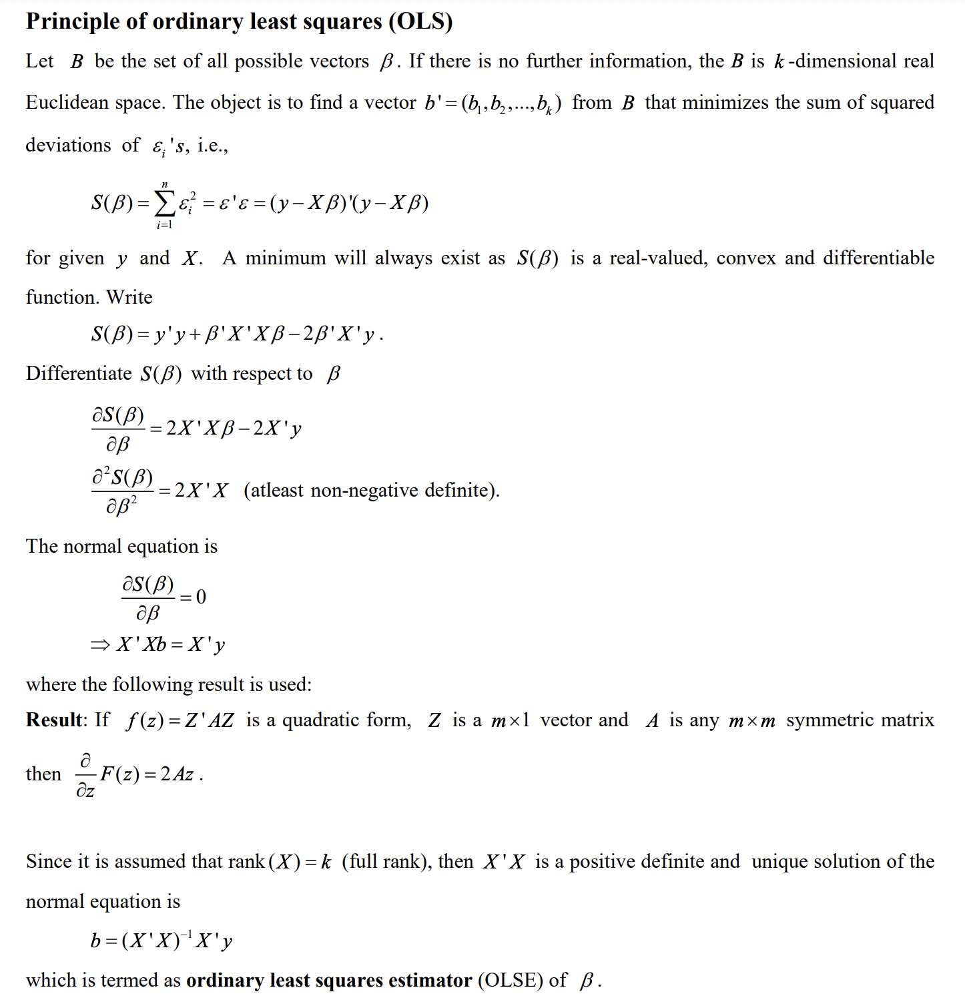

Linear Regression Theory and Derivation:
- Linear Regression Theory and Derivation
- Linear Regression Coefficient
Multiple Regression Theory and Derivation:
- Least Square Estimator for Multi Variable
- 
- IITK Website
Gradient Descent:
- Derivation of Gradient Descent